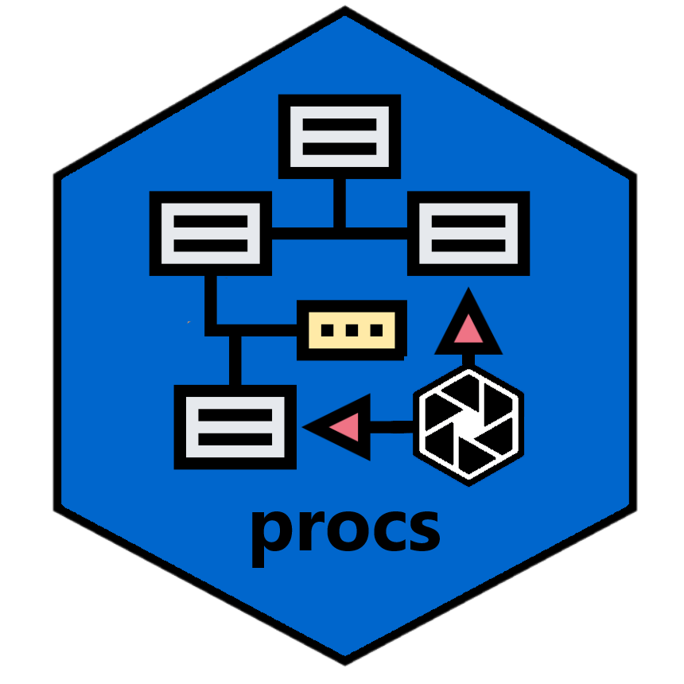

The purpose of the procs package is to recreate some SAS® procedures in R. The first version of the package will attempt to recreate PROC FREQ and PROC MEANS. Subsequent versions of the package will add more statistical procedures.
The package will also include a recreation of PROC TRANSPOSE, PROC SORT, and PROC PRINT. The reason these procedures are included is because they are frequently used in conjunction with the statistical procedures to prepare results for reporting.
There are three motivations for recreating SAS® statistical procedures in R:
1) Rich Outputs: R provides a wide range of statistical packages and functions. However, these statistical functions frequently return a fragmented output. The user is often left to compile R statistical results into a readable report themselves.
SAS® software, on the other hand, provides the same statistical results, but with rich outputs. These outputs include multiple datasets, plots, and complete statistical reports. These rich outputs could be a benefit to R users.
2) Pre-Validation: There is an industry-wide movement to adopt R for statistical analysis. This effort is complicated by the fact that R statistical procedures frequently do not produce identical output to SAS®. Many hours are burned trying to figure out why R statistical results do not match SAS® statistical results.
Therefore another goal of the package is to match SAS® statistics with as much fidelity as possible. If R statistical results match SAS® output, it makes it much easier to rewrite SAS® programs in R. This pre-validation will ultimately save the industry tens of thousands of hours of effort.
3) Ease of Adoption: Another important aspect of the package is to facilitate the adoption of R by SAS® programmers. SAS® programmers will easily understand and be comfortable with the functions in this package. They will become productive in R much faster than with Base R functions, or statistical functions from other packages.
4) Stability: SAS® software is renowned for its backwards compatibility. A final goal of the procs package is to create a set of functions with a similarly intense concern for stability. The package aims to avoid breaking changes at all costs. The dream is that programs written with these functions will still work years from now.
Call for Contributors
There are many useful SAS® procedures, and these procedures are very complicated. The procs package is therefore also a potentially large and complicated package. The package would benefit from an energetic team of contributors, rather than relying on a single individual. If you wish to contribute to procs, please contact the package author at dbosak01 at gmail.com.
Installation
The easiest way to install the procs package is to run the following command from your R console:
install.packages("procs")Then put the following line at the top of your script:
library(procs)For examples and usage information, please visit the procs documentation site here
Getting Help
If you need help, the first place to turn to is the procs web site.
If you want to look at the code for the procs package, visit the github page here.
If you encounter a bug or have a feature request, please submit an issue here.
See Also
The procs package is part of the sassy meta-package. The sassy meta-package includes several packages that help make R easier. You can read more about the sassy package here.